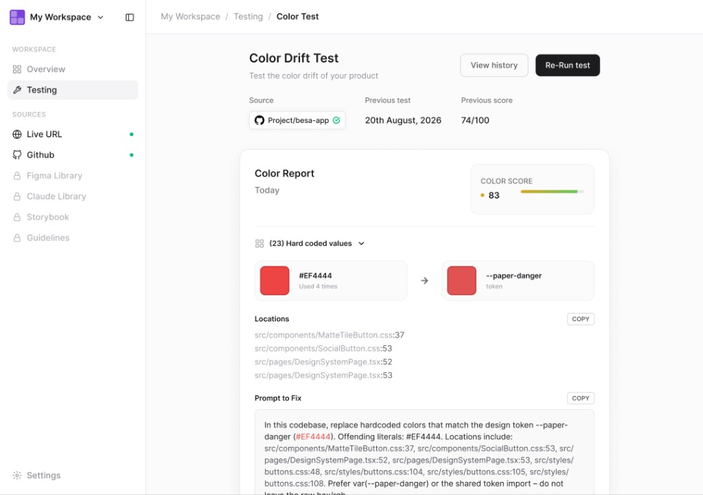
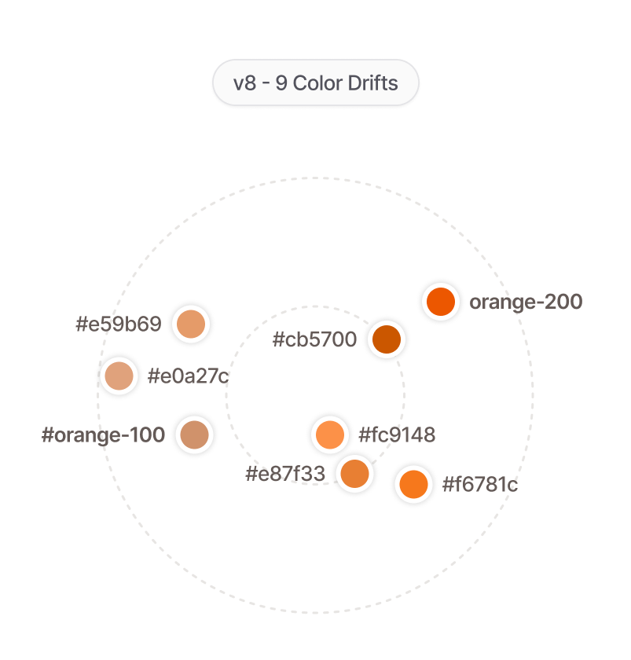
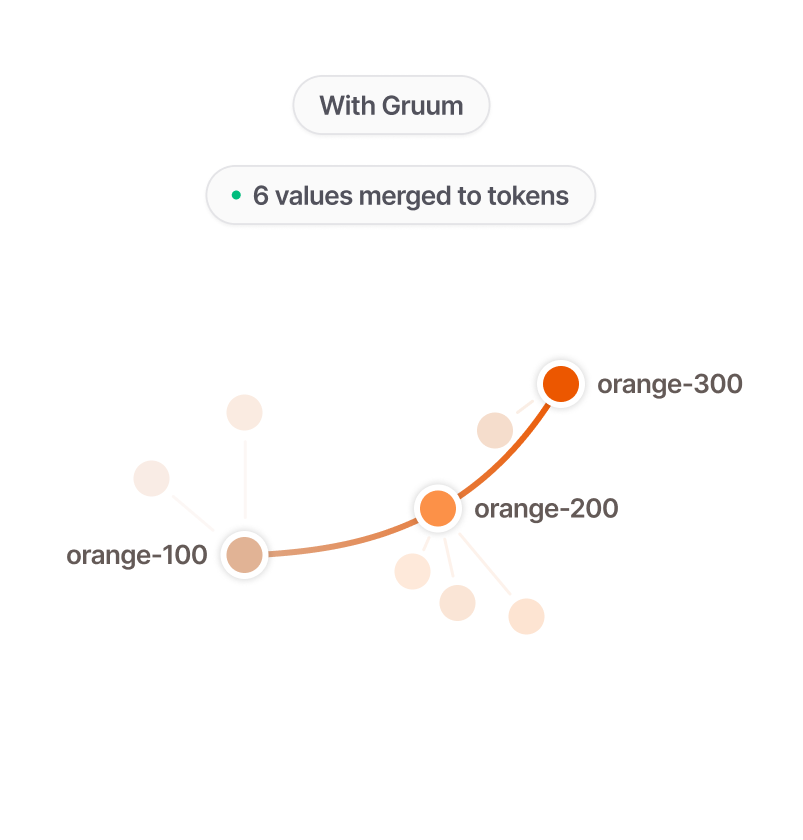
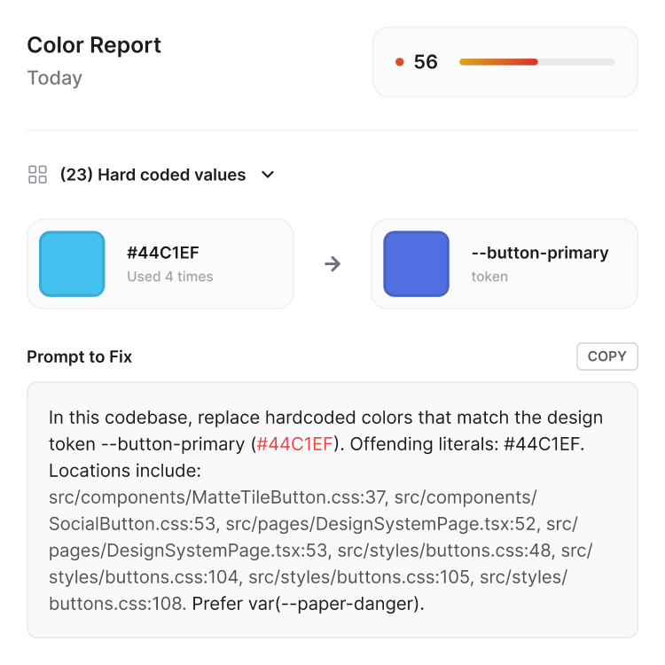

Designers
The live product doesn’t match the file you shipped. Downstream changes never make it back.
Gruum diffs production against your Figma library so you catch drift without sitting in every review.
Design consistency layer
Gruum scans Figma, GitHub, Canva, and your agent rules — then shows what’s inconsistent, with a prompt ready to fix it.

Marketing owns color in Canva. Design owns components in Figma. Engineering owns the button in GitHub. Agents invent values the CLAUDE.md never mentioned. Drift is invisible until it ships.
If you own a piece of the system — or have to ship it anyway — Gruum is the shared layer underneath.
Designers
The live product doesn’t match the file you shipped. Downstream changes never make it back.
Gruum diffs production against your Figma library so you catch drift without sitting in every review.
Developers
New UI lands with no easy way to see impact. Near-duplicate styles and components just keep growing.
Each finding maps to a file and line, plus a prompt to merge, replace, or delete.
Builders
Agents ship fast while rules sit unused. The model invents values instead of following the system.
Gruum checks the output against real sources and returns a prompt the agent can actually run.
Managers
The final UI doesn’t match what was expected. Every team stored “the” source of truth in a different tool.
One scan shows the drift, the cleanup, and whether consistency is getting better.
From the sources you already have to a shared layer, in minutes.
Point Gruum at GitHub, a live site, Figma, style docs, or an agent rules file.
It checks styles, components, copy, and motion for drift, duplicates, and anything unused.
You get a report plus a ready-to-run prompt — for a developer, or straight into your coding agent.
One pass across every connected source. Four layers. A prompt you can run.
Unlimited · all plans
Find the drift
Hardcoded hex, near-duplicate tokens, forked buttons, off-tone copy, timing that doesn’t match the system.
Get a runnable prompt
Each finding includes file and line, plus what to merge, map, or delete — ready for a person or an agent.
Pro and above
Track the score
Every scan is saved. See whether color, type, and components got better this week or piled up.
Four layers at once
Styles, components, copy, and animation — not a color-only lint, and not a screenshot diff.
Pro and above
Sync the libraries
Connect the sources you have. If you never had a system, Gruum can reverse-engineer a starter from the code.
Keep agents on-system
The prompt follows what already exists. Agents stop inventing values the CLAUDE.md never covered.
A real color scan. Near-duplicates get traced back to tokens — or merged into new ones the rest of the org can check against.
+12
color tokens flagged for merge
4 hrs
saved vs. a manual audit
100%
of drift traced to a file and line

9 color drifts, no shared token

6 values merged into orange-100, orange-200, and orange-300
Every scan exports a ready-to-use prompt. Hand it to a developer, or feed it to the agent that skipped the CLAUDE.md.

Start free. Pay when the scans are worth keeping.
Billing period
Free
$0
Enough to see if your system has drift worth fixing.
Pro Most popular
$12 / user / mo
billed yearly
For an individual or small team ready to keep more than one project clean.
All Free features, plus:
Business
$20 / user / mo
billed yearly
For teams who need everyone — design, dev, and the AI agents building alongside them — looking at the same source of truth.
All Pro features, plus:
Enterprise
Custom
Annual billing only
For orgs where design system drift is a compliance and procurement question, not just a workflow one.
All Business features, plus:
Start with your GitHub repo or your live site — that’s enough for Gruum to scan what’s actually shipped. From there it checks against your other sources of truth: Figma, Canva, style docs, or an agent rules file, so drift gets caught no matter where it started.
It finds them and gives you a ready-to-run prompt — merge these tokens, delete this duplicate, rename this component. You, or your coding agent, run the fix. Gruum doesn’t silently rewrite your code or your design files.
Gruum only reads what it needs to run a scan — the repos, sites, and files you connect. Reports stay in your account unless you share them. We don’t sell your data, and we don’t write back to your code or design files. Details are in the Privacy Policy.
Those tools keep one system honest — your components, or your tokens. Gruum checks them against each other: your Figma file against your codebase against your live product, so it catches the drift that happens between systems, not just within one.
A single scan takes minutes. Most teams start with one before a release, then move to a regular cadence — weekly, or on every PR — once they see how much drift creeps in between checks.
One scan. A prompt ready to fix it. The drift shrinks instead of piling up.